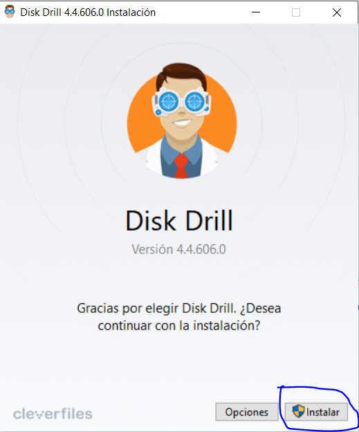

Paso1
Entrar en la pagina web de diskdrill para descargarnos la aplicación.

Paso2
Tenemos dos tipos de versión la gratuita o la comprada ya dependiendo del uso que queramos darle elegiremos una o otra. Nosotros vamos a elegir la gratuita.

Paso3
Al elegir la descarga gratuita se comenzará a descargar automáticamente el programa.
Paso4
Una vez se ha descargado clicamos en el programa.

Paso5
Al abrirlo nos aparece la ventana de instalación del programa y le damos a instalar.
Paso6
Esperamos el proceso de instalación del programa.

Paso7
Después de la espera ya está terminada la instalación y le damos a iniciar.

Paso8
Nos aparece una ventana con la licencia, aceptamos la licencia y continuamos.
Paso9
Nos explica las herramientas que tiene el programa y le damos a continuar.
Paso10
Antes de comenzar podemos habilitar la protección (a elección de cada uno) y le damos a comenzar.
Paso11
Ya estamos dentro de la aplicación para poder recuperar datos o proteger y ya esta finalizado la instalación.